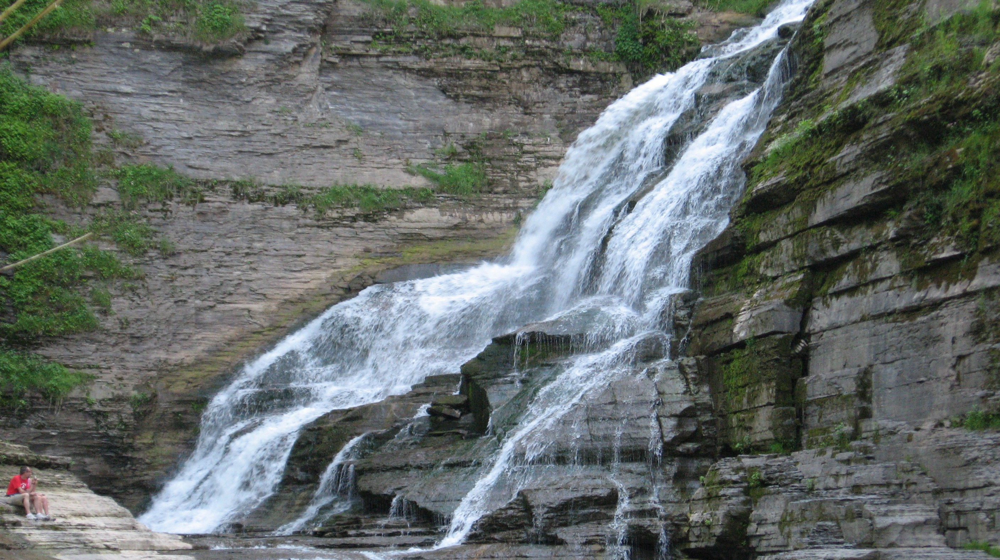
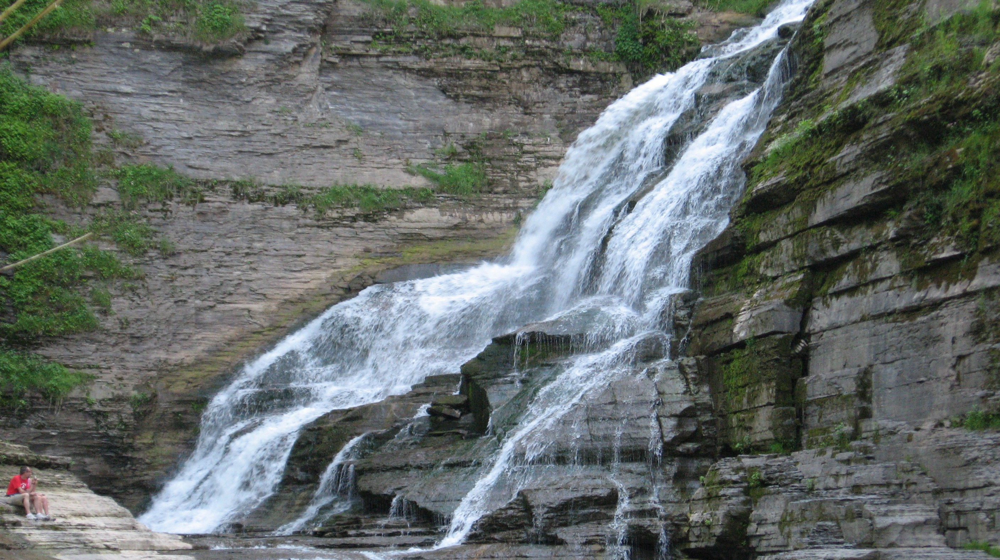
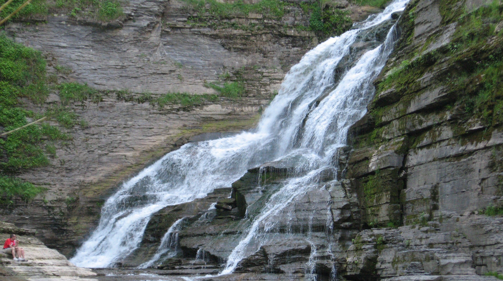

Robert H. Treman Park hosts an impressive series of waterfalls and gorges with a 4.5 mile long hiking trail. The most popular attraction is Lucifer falls, a 115-foot-tall waterfall that empties into a scenic valley. While hiking, there are areas on the trail that will allow access into the river bed. During a hot summer day this can be an exceptional place to rest or have a picnic.
The hike itself if slightly more challenging that the other locations recommended on this trip. There are several hills that the trail passes over which could prove challenging to those with mobility issues.
The history of the parks begins in 1920 when the region known as Enfield Glen was donated to New York by Robert H. Treman and his wife, Laura Treman. At this point it was converted into a state park and several walkways were constructed allowing hikers easier access to the gorge.

While hiking Treman State Park, hikers should bring food and sandals for wadding in the stream. It is also recommended that hikers be prepared for steep inclines and long flights of stairs.